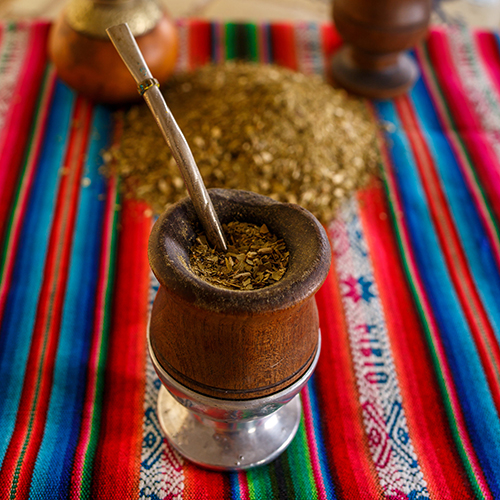

Everyone in the world associates the famous Tango with Argentina, because everyone knows that this is where it began. Tango has been around since the beginning of the 20th century, and has spread throughout the world as a sensual dance of love. However, the Tango has not always been widely accepted. At its conception, the Tango was danced solely by working class men and prostitutes! It was highly disregarded by upper class members of society.
It wasn’t until Paris picked up on the dance and made it popular throughout Europe that is because socially acceptable to express your sexuality in such a way!
Ushuaia is the capital city of the Tierra del Fuego province in the most southern part of Argentina. Sometimes referred to as ‘the end of the world’, it is a popular tourist spot when people visit Patagonia, as it offers visitors the chance to see wild penguins, seals and whales. It has a constant population of about 57,000 people, and temperatures range from a maximum of 15° C to -1°C! Brrrr!
The celebrated political figure Ernesto ‘Che’ Guevara is commonly linked to Cuba and the Cuban Revolution, however he is originally from Rosario, Argentina! He grew up in Argentina and went to medical school in Buenos Aires. After medical school he travelled through Latin America and witnessed the extreme poverty and inequality of Argentina and its surrounding countries, thus igniting his interest in politics and Marxist ideals.
Every Argentine in any part of the world carries his Mate, his grass and his thermos. This drink is indispensable in the lives of Argentines. However, what makes this one of the most unique Argentine customs is the way in which Mate is taken. Although you could take it alone, the common thing is that Mate is shared among friends. Therefore, it is very common to see a group of friends sitting sharing the drink with the same bulb and passing the Mate from hand to hand.
Argentina may be considered by some people as a developing country, but in 2010 the government legalized same-sex marriage nationwide under the current president Cristina Kirchner. Seen by some as quite a bold statement, it proves that Argentina is on its way to becoming one of the more forward thinking countries of the world. Argentina also has the world’s first baby to legallyhave two fathers!
Argentina is a land of extremes! Argentina’s tallest mountain is called Mount Aconcagua and is found in the Mendoza province. It stands at an incredibly tall of 22,831 ft above sea level! It is basically the highest mountain in the world outside of Asia!
The lowest point, - Laguna del Carbon (-105 metres) - in the Province of Santa Cruz. Also, the hottest and coldest temperatures ever recorded in South America, both occurred in Argentina!
Surprisingly, Argentina has the highest number of psychiatrists per capita in the entire world! In the last study conducted to find out just how many Argentine’s have psychiatrists, experts discovered that 145 people out of 100,000 have a shrink. This may not sound like that many, but Denmark comes in second place with only 85 out of 100,000 – making Argentina almost double!
All the way back in 1890, a distraught woman called Francisca Rojas claimed that someone had brutally stabbed her two young children to death in their rural home in Argentina. Her neighbour, who she was suspicious of, was quickly arrested and tortured to obtain a confession. He kept his mouth shut, so the investigators had to look into other ways to uncover the killer. The detective in charge went back to the scene of the crime and discovered a bloody fingerprint. He asked for a copy of the mother’s prints, and they quickly found a match. Thanks to their fingerprint research the mother immediately cracked and confessed to the murder!
She was the first person in the world to be found guilty through fingerprint evidence.
Argentina is famous for its production of steak, so as you would imagine, the locals eat a lot of it. In fact until very recently, Argentina ate the most red meat per capita then any other country in the world. However, that title is now held by their neighbours – Uruguay! But that doesn’t stop Argentine’s from enjoying a nice juicy steak at one of their thousands of parillas across the country. As any traveler will tell you, Buenos Aires is still very meat meat meat orientated.
Argentina is the largest Spanish speaking country in the world, with a population of over 42 million people. It is also the 8th largest country in the world. It covered a vast area of land – 2,780,400 km² – that is largely unpopulated, but has a pretty impressive variety of landscapes.